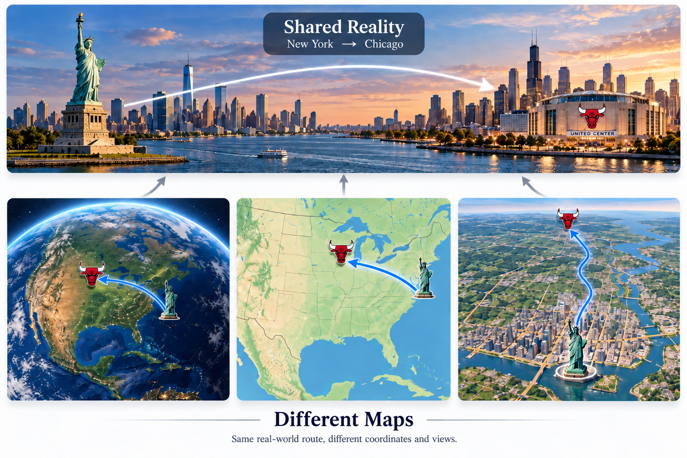

A shared reality, seen through directions
Displacement GeometryCaptures Platonic Shared Reality
Across Models and Modalities
Department of Computer Science, Dartmouth College
* chenming.shang@dartmouth.edu
TL;DR
We show that models do converge on a shared Platonic representation, captured not in the locations of samples in representation space, as in the prevailing view, but in the directions between them.
01 / The central idea
Metaphor

02 / Two geometric regularities
Geometry
Across models, displacement directions align. Within a model, hierarchical concepts organize through approximately orthogonal increments.
Intra-model Orthogonality
03 / Evidence across 44 models
Experiments
We study 25 vision encoders and 19 language models across pretraining objectives, scales, and modalities, from sample-level relations to concept structure and training dynamics.
01
Parallelism
Displacement agreement exceeds pointwise agreement across vision and language models. The signal is strongest at the concept level and increases with model scale.
2.a
Sample-level agreement
2.b
Concept-level agreement
2.c
Effect of model scale
All three panels report cosine similarity, not task accuracy. PCA, whitening, and OPA are fitted on an alignment split and evaluated on disjoint inputs.
02
Orthogonality
Parent–child geometry persists across layers. Controlled simulations test its role in sample-level parallelism by disrupting concept-level parallelism or orthogonality.
4
Geometry across layers
9.a
Disrupting concept parallelism
9.b
Disrupting orthogonality
03
Modality
Shared directional structure appears at different depths across modalities: corresponding vision layers align, language alignment spans many layers, and cross-modal agreement concentrates in deep vision layers.
5.a
Vision ↔ Vision
5.b
Language ↔ Language
5.c
Vision ↔ Language
04
Dynamics
Training objectives affect positions and directions differently. Fine-tuning reduces displacement agreement; feature distillation raises both measures; relational distillation improves directional agreement while leaving pointwise similarity nearly unchanged.
6.a
Fine-tuning
6.b
Relational distillation
6.c
Feature distillation
6.d
Training from scratch
6.e
Scratch + relational distillation
6.f
Scratch + feature distillation
05
Decomposition
A label-free cross-model consensus decomposition separates high-consensus shared directions from low-consensus private directions. Shared subspaces retain more linearly decodable semantics, while shared and private components remain nonlinearly related.
7.a
Cross-model agreement
7.b
Linearly decodable semantics
7.c
Nonlinear dependence
04 / From geometry to capability transfer
Application
ShadowCLIP
Shadow Casting reuses frozen model representations to train lightweight transfer modules. Our proof of concept, ShadowCLIP, combines CLIP with DINO’s visual features and relational supervision from an LLM.
01
Extract the shadows.
Run the training set through frozen CLIP, DINO, and the language teacher once. Cache their representations for reuse.
02
Connect complementary strengths.
A CLIP-gated SwiGLU residual incorporates DINO features. A text-side MLP learns semantic relations from LLM2Vec-Gen-Qwen3-4B.
03
Train the small modules.
Use image–text contrastive learning and relational distillation on CC12M. Zero-initialized gates preserve CLIP’s initial behavior.
At inference
The LLM teacher is removed. The vision branch still uses both CLIP and DINO for new images.
95%
fewer trainable parameters20M vs. 400M · CLIP-Large
9×
less total FLOPsincluding caching · 3 training epochs
2,000×
less training-phase FLOPsafter feature precomputation
Classification · Retrieval · Visual understanding
Experimental results
Evaluation spans 11 zero-shot classification datasets, image–text retrieval on COCO and Flickr30k, and visual-centric understanding on MMVP.
+3.6pp
Average zero-shot accuracyover CLIP-Base · 11 datasets
+9.6pp
Visual-centric understandingMMVP · CLIP-Large: 20.0 → 29.6
89.9%
Flickr30k image-to-text R@1ShadowCLIP-Large
| Method | ImageNet-1K | COCO I2T | COCO T2I | Flickr30k I2T | Flickr30k T2I | MMVP |
|---|---|---|---|---|---|---|
| CLIP | 72.7 | 59.7 | 43.0 | 87.6 | 70.2 | 20.0 |
| SAIL-NV2 | 72.1 | 57.3 | 45.3 | 84.9 | 73.0 | 28.0 |
| CLIP-FT | 69.3 | 55.6 | 42.7 | 82.5 | 68.9 | 19.3 |
| w/o RKD | 70.2 | 56.6 | 43.5 | 82.1 | 70.3 | 20.0 |
| ShadowCLIP | 76.5 | 64.0 | 44.4 | 89.9 | 72.4 | 29.6 |
Table 1 in the paper. I2T / T2I: image-to-text / text-to-image retrieval R@1. Bold marks the best result within the selected model size; “—” indicates an unreported result.
SAIL uses an LLM text encoder at inference; ShadowCLIP retains CLIP’s text encoder. Computational figures above concern training, and include caching only where specified.
Build on this work
Citation
If you find this work useful, please consider citing our paper.
@article{shang2026displacement,
title = {Displacement Geometry Captures Platonic Shared Reality Across Models and Modalities},
author = {Shang, Chenming and Tang, Yujin and Ouyang, Junjie and
Xu, Ruize and Breuer, Adam and Singh, Nikhil},
journal = {arXiv preprint arXiv:2609.24209},
year = {2026},
eprint = {2609.24209},
archivePrefix = {arXiv},
primaryClass = {cs.LG},
doi = {10.48550/arXiv.2609.24209},
url = {https://arxiv.org/abs/2609.24209}
}